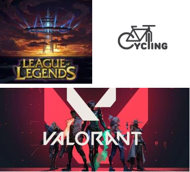

Glad to Meet u :)
Welcome to my Website!
My name is John Paulo Ibe, and here is a picture of my family. I have three brothers,on my right is my second brother,he's name John Rhey, and he is a third-year student at TUP Manila the program he took there was bsce,and on his right is John Carlo, who is my older brother He currently works as a call center agent.and next is my mother, Mama Hilda, the best mother in my life because without him we wouldn't have three brothers.she is house wife btw! and last is my only father, Papa Floro! His job is a tricycle driver and he is very hardworking! and he hates the lazy :/ and this is my happy big family!!
NAME:JOHN PAULO JOVES. IBE / BSIT 1B
AGE:19 YEARS OLD
CURRENTLY ENROLLED IN PAMANTASAN NG LUNGSOD NG PASIG (PLP)
1ST YEAR STUDENT/PROGRAM/ BS INFORMATION TECHNOLOGY/

PLAYING AND RIDING 
IT courses can be an outstanding way to get a greater understanding of the technological aspects of the job. A diploma in IT is a highly valued in many careers, especially those with a financial or creative focus.
it may be distracting to students,may disconnect students from face-to-face relationships,it may make cheating easier